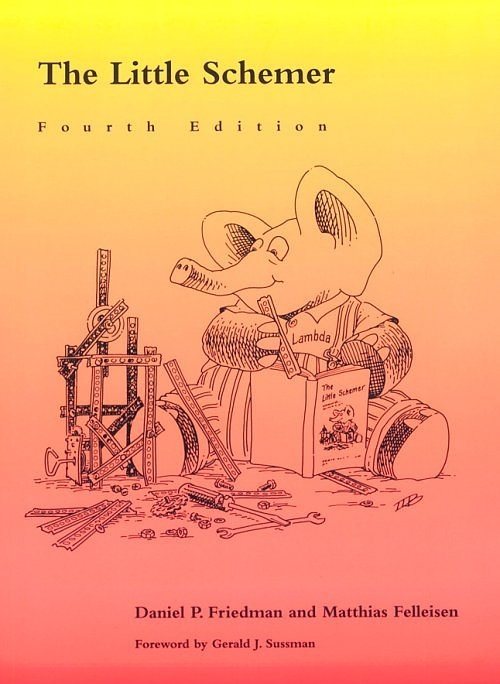
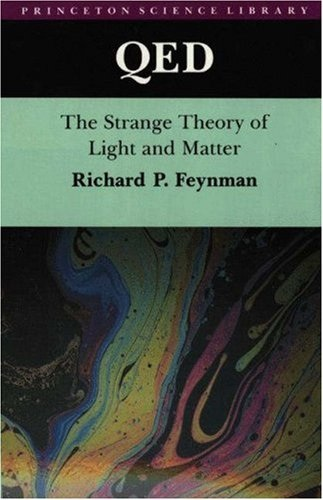
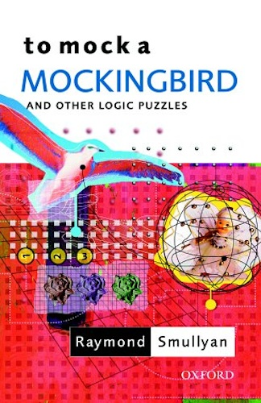

You've earned a break!
If you follow the instructions at coffeescript.org to install NodeJS and CoffeeScript,27 you can run an interactive CoffeeScript REPL on your command line simply by typing coffee. This is how the examples in this book were tested, and what many programmers will do. When running CoffeeScript on the command line, ctrl-V switches between single-line and multi-line input mode. If you need to enter more than one line of code, be sure to enter multi-line mode.
Some websites function as online REPLs, allowing you to type CoffeeScript programs right within a web page and see the results (as well as a translation from CoffeeScript to JavaScript). The examples in this book have all been tested on coffeescript.org. You simply type a CoffeeScript expression into the blank window and you will see its JavaScript translation live. Clicking “Run” evaluates the expression in the browser.
To actually see the result of your expressions, you’ll need to either include a call to console.log (and be using a browser that supports console logging) or you could go old-school and use alert, e.g. alert 2+2 will cause the alert box to be displayed with the message 4.

The Little Schemer
CoffeeScript Ristretto was inspired by The Little Schemer by Daniel Friedman and Matthias Felleisen. But where The Little Schemer’s primary focus is recursion, CoffeeScript Ristretto’s primary focus is functions as first-class values.

QED: The Strange Theory of Light and Matter
Richard Feynman’s QED was another inspiration: A book that explains Quantum Electrodynamics and the “Sum of the Histories” methodology using the simple expedient of explaining how light reflects off a mirror, and showing how most of the things we think are happening–such as light travelling on a straight line, the angle of reflection equalling the angle of refraction, or that a beam of light only interacts with a small portion of the mirror, or that it reflects off a plane–are all wrong. And everything is explained in simple, concise terms that build upon each other logically.

To Mock a Mockingbird and other logic puzzles
And of course, To Mock a Mockingbird by Raymond Smullyan. I have no words to describe the delight of venturing into a forest of songbirds and emerging with an understanding of Kestrels, Starlings, the Idiot Bird, Sage Birds, and ending with an understanding of Combinatory Logic.
The original words in this book are (c) 2012, Reginald Braithwaite. All rights reserved.
When he’s not shipping CoffeeScript, Ruby, JavaScript and Java applications scaling out to millions of users, Reg “Raganwald” Braithwaite has authored libraries for CoffeeScript, JavaScript and Ruby programming such as Method Combinators, Katy, JQuery Combinators, YouAreDaChef, andand, and others.
He writes about programming on his “Homoiconic” un-blog as well as general-purpose ruminations on his posterous space. He is also known for authoring the popular raganwald programming blog from 2005-2008.
Twitter: @raganwald
Email: reg@braythwayt.com
Reg "Raganwald" Braithwaite
() is optional, so this function could also be written () ->. In this book, we’re trying to focus on concepts which add greatly to your understanding of programming in CoffeeScript, so we’ll often skip over options like this that can make a program easier on the eyes but don’t provide a building block for further learning. We’ll just assume that if you don’t already know it, you’ll pick it up quickly enough from free sources such as the online documentation.↩[[Circular]] back. Never mind, internally CoffeeScript has constructed a perfectly fine Ouroborian array even if it won’t try to print it out for you.↩let has made its way into other languages like JavaScript.↩let is limited in some ways. For example, you can’t define a recursive function without some fixed point combinator backflips. This will be discussed later when we look at the related pattern letrec.↩this as well, but this is all we care about right now.↩.get and .call methods for interacting with a potentially remote object.↩